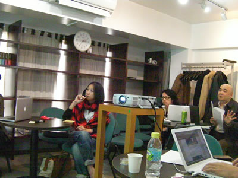

レポート >
レポート書いてあるBlog
概要
- 日時：2008/11/23(日) 13:30~18:00
- 場所：AIPcafe
- 参加人数：12人
大まかな流れ
- 13:30〜 話したい人／ディスカッション内容決め
- 14:00〜 ライトニングトーク
- 高田さん：ナビゲーションメニューについて
- 武井さん：E-HAKATAプロジェクト
- 西嶋さん：制作環境のちら見せ
- 山田（やいぶ）さん：CMSの使わせ方
- 15:30〜ディスカッション1
- Aグループ：デザイン依頼された際に押えておくべきポイント
- Bグループ：サイトリニューアルについて
- 16:15〜ディスカッション2
- Aグループ：Web制作はどこまでうける？
- Bグループ：PCサイトと携帯サイトの両方を企画／制作するとき
- 17:45〜全体ディスカッション
ざっくりした内容
プレゼンタイム
- 高田さん：CSSでメニューの表示・非表示切り替え
- カテゴリ毎にローカルメニューを切り替える（開く／閉じる）はCSSで制御(display:none等)してもいいか？
- 情報として適切な情報なので、CSSで隠すのは問題無い
- ページ毎／カテゴリ毎にCSSを読み込ませるか、共通CSSでやるかは規模感と人それぞれ。
- 武井さん：E-HAKATA 博多の街
の紹介

- オープンソースで構築・運営している地域SNSの紹介
- 「はっぱの会」などは地域住民が投稿できるSNSシステム。
- 西嶋さんの制作環境
(Mac)
- CODA (プレーンなテキストエディタ)
- cssedit のプレビュー機能
- Dreamweaverのコマンド[ソースフォーマットの適用]を[ファイル]-[キーボードショートカット]で登録
- 辞書登録が最強？
- 「あh」→「<a href=""></a>」
- 「でぃv」→「<div></div>」
- 「うl」→「<ul><li></li></ul>」
- ブランコ山田さん ：CMSをどこまで使わせる？
- CMSで構築サイトもクライアントが更新していくたびにHTMLやレイアウトが崩れていく
- 予算も無い中でドキュメントや研修を行うのか？
- 勝手にクライアントにデザイン変更される事に納得できるか？
ディスカッション
- デザイン依頼された際に押えておくべきポイント
- ケータイとPCサイト両方の制作依頼を受けたとき
- Web制作はどこまでうける？
- サイトリニューアルの注意点
- Webのお仕事について
懇親会はFTP（ふとっぱら）で。
今回の反省・今後の事
- ディスカッションは初の試み。
- 発言する人が決まってる感があるので、小さくグループを作ってみる事に
- 参考にしたのはtenjin.webさんの勉強会「programmer's high」
- ディスカッション中心でもいろいろ気づかされる点も多くありました。
- 時間を厳しく区切ってなかったので、少しのびのびになってしまいました。
次回のお題や日時について
|
|